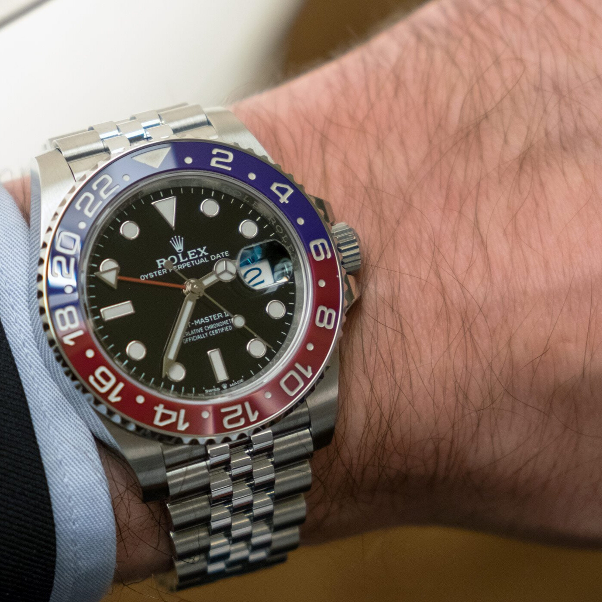

Rolex GMT-Master II Pepsi Jubilee
Rolex GMT-Master II Pepsi Jubilee to jeden z najbardziej rozpoznawalnych i pożądanych zegarków na świecie. To klasyczny model, który łączy w sobie doskonałą precyzję, wysoką jakość i elegancki design. Ten zegarek jest doskonałym wyborem zarówno dla kolekcjonerów, jak i dla osób, które szukają niezawodnego zegarka do noszenia na co dzień. GMT-Master II Pepsi Jubilee został wprowadzony na rynek w 2018 roku z okazji 65-lecia GMT-Mastera. Model ten posiada klasyczną kopertę o średnicy 40 mm wykonaną z niezwykle trwałej stali nierdzewnej. Na tarczy znajdują się charakterystyczne dla modelu GMT-Master II wskazówki w kolorze niebieskim i czerwonym, które symbolizują podział czasu między różnymi strefami czasowymi. Tarcza jest wykonana z czarnej ceramiki i pokryta jest cyferblatami z chromu. Na tarczy znajduje się również indeks godzinowy, który jest pokryty warstwą luminoforu, co pozwala na łatwe odczytywanie czasu nawet w ciemności. Rolex GMT-Master II Pepsi Jubilee posiada także datownik, który wyświetla aktualną datę.

Mechanizm
Jednym z największych atutów tego modelu jest niezawodny mechanizm Rolex Calibre 3285. To ręcznie nakręcany mechanizm z automatycznym naciągiem, który zapewnia dokładność wskazań do +/- 2 sekundy dziennie. Mechanizm ten posiada również rezerwę chodu wynoszącą około 70 godzin.
Jubilee
Zegarek Rolex GMT-Master II Pepsi Jubilee posiada także unikalną bransoletę Jubilee wykonaną z pięknego połączenia stali nierdzewnej i 18-karatowego złota żółtego. Bransoleta ta posiada także innowacyjny system Easylink, który pozwala na łatwe dostosowanie jej długości do indywidualnych potrzeb.
Wodoodporność
Warto również zwrócić uwagę na wodoodporność tego modelu, która wynosi 100 metrów. Oznacza to, że zegarek można nosić podczas pływania, nurkowania czy uprawiania innych sportów wodnych. Rolex GMT-Master II Pepsi Jubilee to zegarek dla osób, które cenią sobie najwyższą jakość, precyzję i elegancki design. Jest to model, który z pewnością przetrwa wiele lat i będzie wspaniałym dodatkiem do każdej kolekcji zegarków.